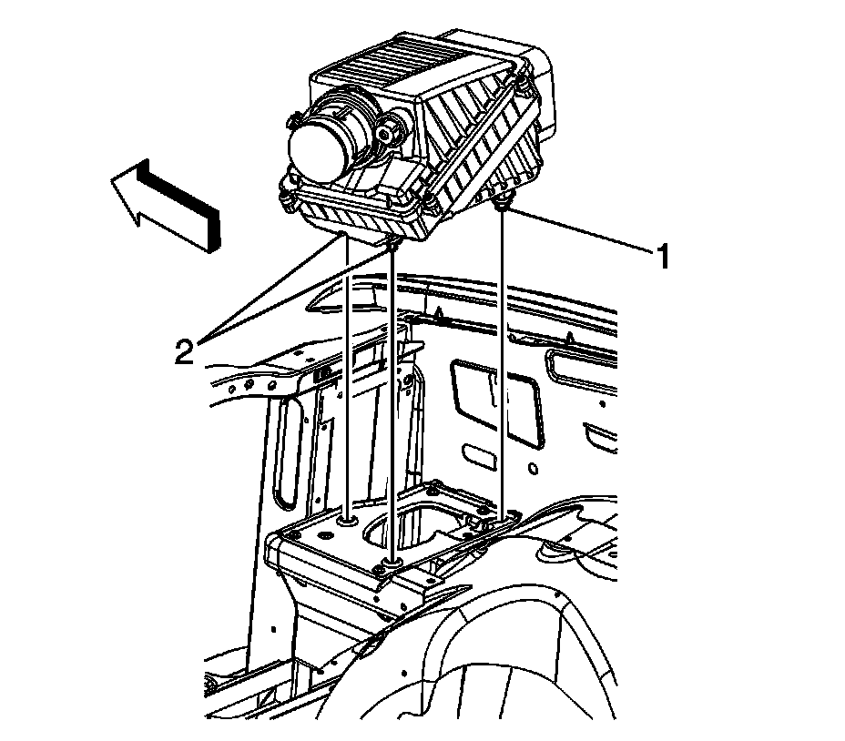

Air Cleaner Housing: Service and Repair
AIR CLEANER ASSEMBLY REPLACEMENT
REMOVAL PROCEDURE

1. Remove the air cleaner outlet duct.
2. Disconnect the engine wiring harness electrical connector (2) from the mass air flow (MAF)/intake air temperature (IAT) sensor.

3. Pull up on the front of the air cleaner assembly in order to release the retainers (2) from the air cleaner adapter.
4. Slide the air cleaner assembly forward disengaging the locator (1) from the adapter.
5. Remove the air cleaner assembly.
6. If replacing the air cleaner assembly proceed to the following step otherwise proceed to step 5 in the installation procedure.

7. Loosen the MAF/IAT sensor adapter clamp.
8. Remove the MAF/IAT sensor and adapter.
INSTALLATION PROCEDURE
IMPORTANT: If the MAF/IAT sensor is installed backwards, the fuel system goes rich. An arrow cast into the plastic portion of the sensor indicates proper air flow direction. The arrow must point toward the engine.
1. If the air cleaner assembly was replaced proceed to the following step otherwise proceed to step 5.
2. Install the MAF/IAT sensor adapter clamp to the air cleaner assembly.
3. Install the MAF/IAT sensor
4. NOTE: Refer to Fastener Notice.
Tighten the MAF/IAT sensor adapter clamp.
Tighten the clamp to 4 N.m (35 lb in).
5. Install the air cleaner assembly.
1. Insert the locator (1) on the right rear of the air cleaner into the inboard side of the slot in the adapter bracket.
2. Slide the air cleaner towards the fender to engage the adapter.
3. Push down on the air cleaner in order to install the retainers (2) into the adapter bracket.
6. Connect the engine wiring harness electrical connector (2) to the MAF/IAT sensor.
7. Install the air cleaner outlet duct.